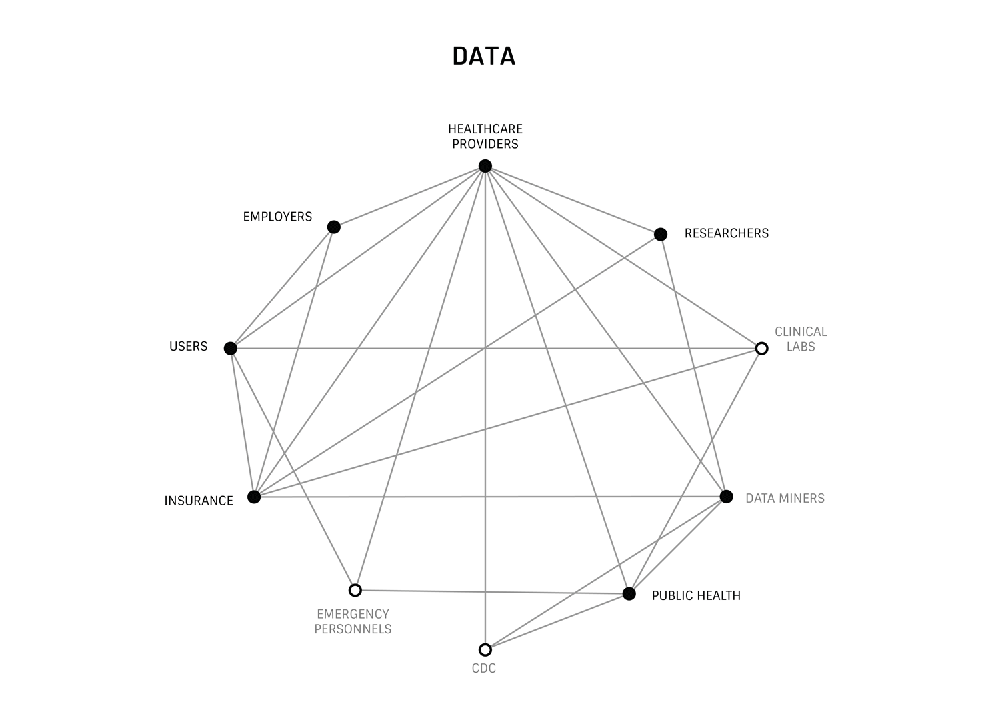
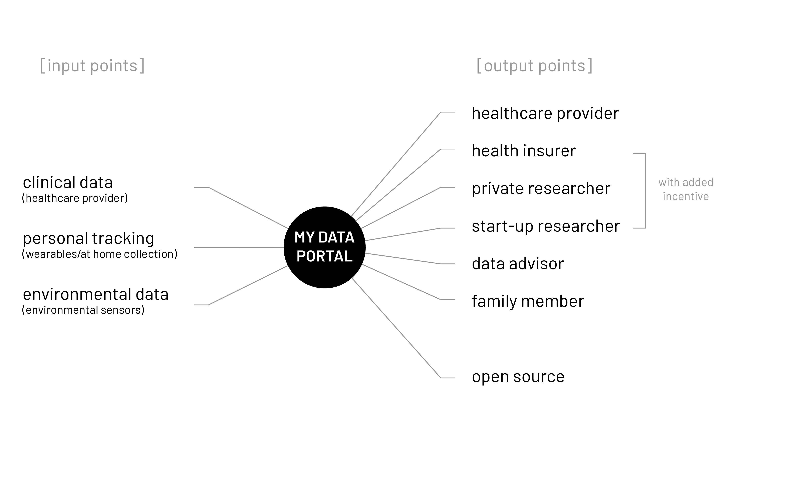

OMNI INDI is a direct-to-consumer digital health service focused on improving individual health outcomes with multi-layered data sets.
The Problem
Individual healthcare data is dispersed and difficult for users to leverage into improved health outcomes. They have wasted a lot of time, money, and energy and still aren’t receiving comprehensive care.
The U.S. Healthcare System
When we look at the system as a whole, there are insurance companies, hospitals, specialists, researchers, employers,
health IT, pharmaceutical companies, policy makers, clinical labs, lobbyists, lawyers, … and the list goes on.
theDataMap is a great resource in understanding the breadth of connections with regards to health data.
(thedatamap)
One stakeholder group that is less commonly known is the Discharge Data Holders which are
"Hospital consortiums or entities authorized by the state receive patient health data from providers
(e.g., hospitals and physicians) and distribute that information to researchers, analytic companies,
prescription analytic companies, public health departments, the CDC, health payers, other government entities,
health information technology companies, the FTC, online websites, employee unionsand providers.” In other words,
they are Data Miners who profit from our health data.
Did you know?
Except in New Hampshire, users/patients do not currently own their health data. Per The Health Insurance Portability and Accountability Act (HIPAA), As a patient, you have access to a copy, but do not own the created health document.
Also note that, “obtaining 'consent' (written permission from individuals to use and disclose their protected health information for treatment, payment, and health care operations) is optional under the Privacy Rule for all covered entities.” (HIPAA)
Why focus on data?
We can view the problem through two channels - financial and data. The diagrams below show the interrelationships between key stakeholders. Since financial relationships are deeply entrenched, data may be a more feasible channel to alter the current system.
Historically, health data was composed predominantly of doctor’s notes, then governments began to collect public health records to help identify neighborhoods at risk of epidemics or outbreaks. Now health data includes blood work, genome mapping, social history, and daily tracking data. With more and more data quantifying who we are, how do we improve our individual health outcomes while also improving health outcomes for all.
Digital Health Data
While medical research and insurance thrive in the new age of digitized health, the benefits have not trickled down to
the user. Inherently siloed and difficult to track, health data systems have introduced inefficiencies in healthcare
leading to increased medical costs and clinical/ diagnostic errors. The process of collecting, documenting, and retrieving health
data is inconsistent and inefficient, leading to higher healthcare costs attributed to administrative rather than health-based issues.
"It is estimated that 30 cents of every dollar spent on medical care in United States is wasted, amounting to $750 billion
annually. Components of waste include inefficient delivery of care, excessive administrative costs, unnecessary services,
inflated prices, prevention failures, and fraud."(read more)
So how might we (1) improve the ecosystem behind healthcare administration? (2) ensure security as well as access to the health data? and (3) utilize health data to benefit the patient? Problems like these are the result of systems built over time for a rapidly growing and diversifying America. This layered buildup in the healthcare space has created a system that is complicated for both the user, and providers, to navigate. We can't try to solve problems by using the same kind of thinking we used when we created them, we need a paradigm shift in which individuals own their health care data.

In the News
The Economist: A revolution in health care is coming
30 Healthcare Statistics That Keep Hospital Executives Up At Night
{kind=link}